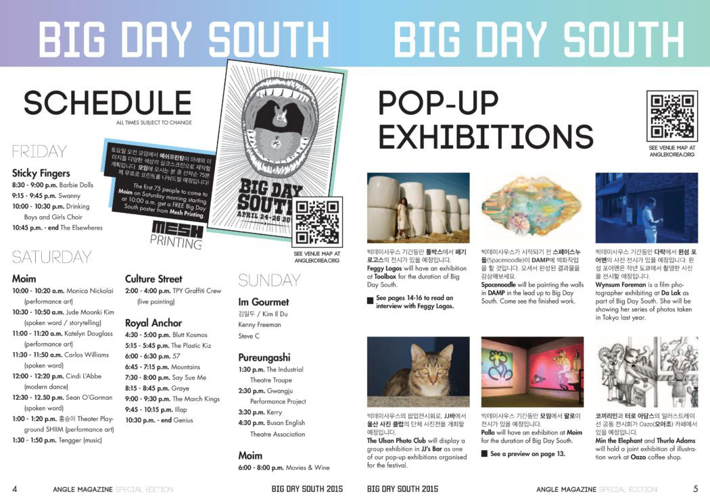
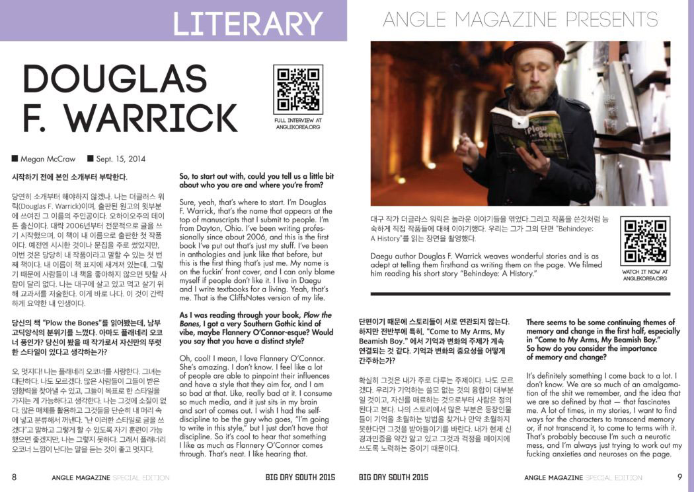
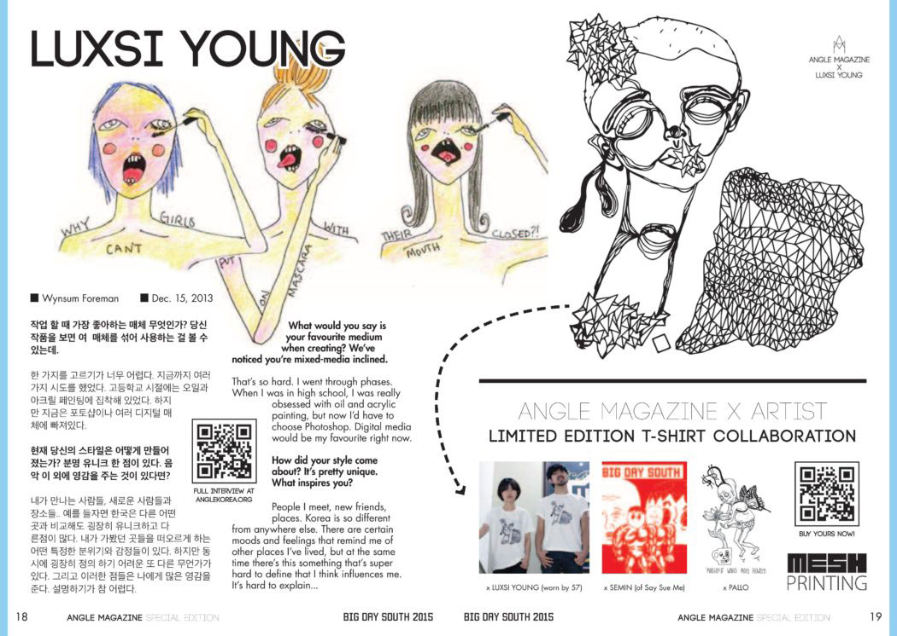
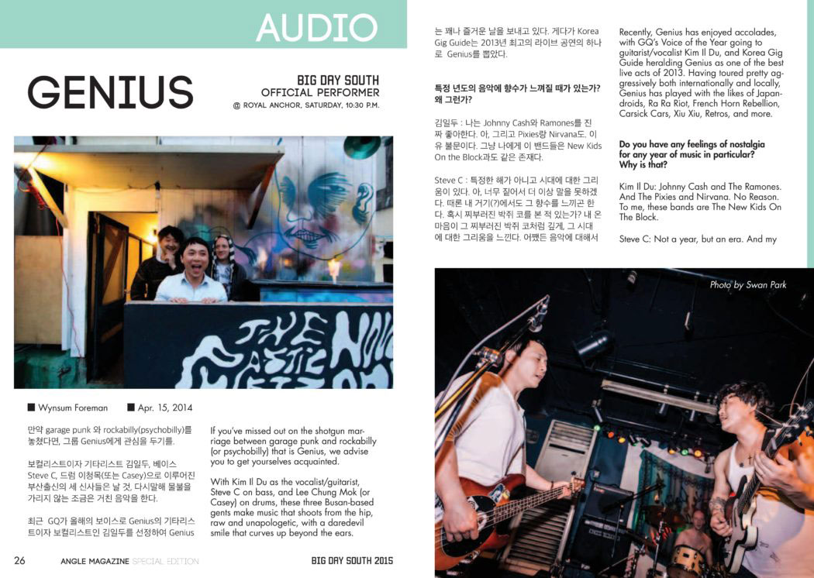

Portfolio: Design
Big Day South 2015: Special Publication

Angle Magazine is normally published only online, but for 2015's Big Day South, we decided to try something a little bit different. Not only did we publish a print edition of the best of Angle Magazine featuring many of the artists and musicians performing at this year's event, but we also incorporated the online publication within the print edition, hoping to increase traffic and awareness of our website at anglekorea.org.
Of course it was fun to see the results of our hard work, watching the numbers increase on the website's analytics dashboard, but the very best thing about having the print edition is what makes my heart race about print publishing in the first place: holding the final product in my hands.
It's unfortunate I can't hand you a physical copy of the magazine through this very screen because the size and paper weight were absolutely perfect for toting around at a festival, but at least you can take a look at the pages below.
View the full PDF    Client: Angle Magazine
Date: April 2015
Project Checklist: Event Marketing and Promotion, Brand Marketing and Promotion, Consistent Branding, Cohesive Design, Print Design, Online Integration into Print Product
URL: anglemagazine.co.kr